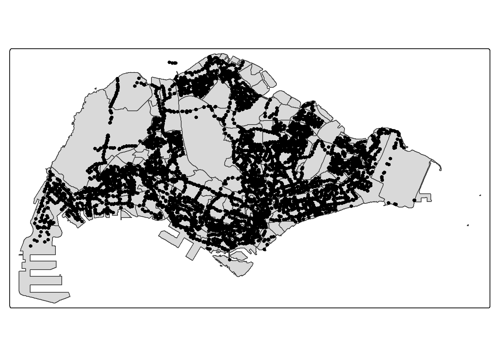
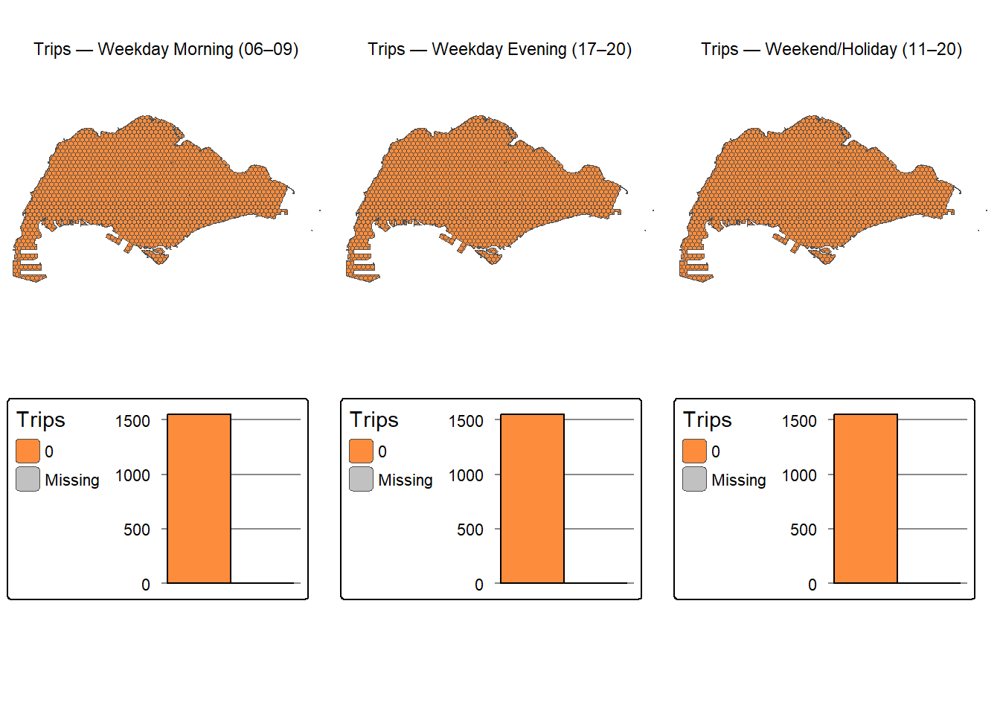

pacman::p_load(sf, tidyverse, tmap, sfdep, knitr)In-class Exercise 6
In-class exercise 6
Innstalling the required package
Busstop = st_read(dsn = "data/LTADataMall/",
layer = "BusStop") %>%
st_transform(crs = 3414)Reading layer `BusStop' from data source
`K:\kalpitkulshrestha24\ISSS626\Take Home Exercise\Take-Home Exercise 2\data\LTADataMall'
using driver `ESRI Shapefile'
Simple feature collection with 5172 features and 2 fields
Geometry type: POINT
Dimension: XY
Bounding box: xmin: 3970.122 ymin: 26482.1 xmax: 48285.52 ymax: 52983.82
Projected CRS: SVY21mpsz = read_rds("data/rds/mpsz_sf.rds")
glimpse(mpsz)Rows: 327
Columns: 5
$ REGION_N <chr> "CENTRAL REGION", "CENTRAL REGION", "CENTRAL REGION", "CENT…
$ PLN_AREA_N <chr> "BUKIT MERAH", "BUKIT MERAH", "OUTRAM", "DOWNTOWN CORE", "D…
$ SUBZONE_N <chr> "DEPOT ROAD", "BUKIT MERAH", "CHINATOWN", "PHILLIP", "RAFFL…
$ SUBZONE_C <chr> "BMSZ12", "BMSZ02", "OTSZ03", "DTSZ04", "DTSZ05", "OTSZ04",…
$ geometry <MULTIPOLYGON [m]> MULTIPOLYGON (((25910.34 29..., MULTIPOLYGON (…odbus <- read_csv("data/LTADataMall/origin_destination_bus_202508.csv")Rows: 5876969 Columns: 7
── Column specification ────────────────────────────────────────────────────────
Delimiter: ","
chr (5): YEAR_MONTH, DAY_TYPE, PT_TYPE, ORIGIN_PT_CODE, DESTINATION_PT_CODE
dbl (2): TIME_PER_HOUR, TOTAL_TRIPS
ℹ Use `spec()` to retrieve the full column specification for this data.
ℹ Specify the column types or set `show_col_types = FALSE` to quiet this message.tm_shape(mpsz) +
tm_polygons() +
tm_shape(Busstop) +
tm_dots()
joining_left
Busstop_in_sg <- st_join(
Busstop, mpsz,
join = st_within,
left = FALSE)
Busstop_in_sgSimple feature collection with 5167 features and 6 fields
Geometry type: POINT
Dimension: XY
Bounding box: xmin: 3970.122 ymin: 26482.1 xmax: 48285.52 ymax: 49903.39
Projected CRS: SVY21 / Singapore TM
First 10 features:
BUS_STOP_N LOC_DESC REGION_N PLN_AREA_N
1 65059 ST ANNE'S CH NORTH-EAST REGION SENGKANG
2 16171 YUSOF ISHAK HSE CENTRAL REGION QUEENSTOWN
3 61101 BLK 120 CENTRAL REGION TOA PAYOH
4 01239 SULTAN PLAZA CENTRAL REGION KALLANG
5 17269 BLK 730 WEST REGION CLEMENTI
6 11291 COLD STORAGE JELITA CENTRAL REGION BUKIT TIMAH
7 11531 OPP LEA HIN HARDWARE FTY CENTRAL REGION QUEENSTOWN
8 46529 OPP MARSILING STN NORTH REGION WOODLANDS
9 95151 AIRPORT POLICE STN EAST REGION CHANGI
10 71169 AZTECH BLDG CENTRAL REGION GEYLANG
SUBZONE_N SUBZONE_C geometry
1 RIVERVALE SESZ02 POINT (35565.66 41659.52)
2 NATIONAL UNIVERSITY OF S'PORE QTSZ11 POINT (21439.91 31253.63)
3 POTONG PASIR TPSZ09 POINT (31381.06 35313.49)
4 CRAWFORD KLSZ09 POINT (31152.55 31688.08)
5 CLEMENTI WEST CLSZ08 POINT (20134.2 31917.38)
6 ULU PANDAN BTSZ04 POINT (22723.57 33349.85)
7 MEI CHIN QTSZ06 POINT (25112.11 30368.68)
8 WOODGROVE WDSZ05 POINT (21465.51 45974.12)
9 CHANGI AIRPORT CHSZ03 POINT (44529.73 36038.38)
10 KAMPONG UBI GLSZ03 POINT (34541.04 34361.09)tm_shape(mpsz) +
tm_polygons() +
tm_shape(Busstop_in_sg) +
tm_dots()
Deriving Analytical Heaxagon
hexagon <- st_make_grid(mpsz,
cellsize = 375,
what = "polygons",
square = FALSE) %>%
st_sf() #to convert into simple dataframefiltering hexagon with bus stops
hexagon$n_collisions =
lengths(st_intersects(
hexagon, Busstop_in_sg))
hexagon <- filter(hexagon, n_collisions > 0)Assigning ids to each hexagon
hexagon <- hexagon %>%
select(n_collisions)
hexagon$HEX_ID <- sprintf(
"H%04d", seq_len(nrow(hexagon))) %>%
as.factor()
kable(head(hexagon))| n_collisions | geometry | HEX_ID |
|---|---|---|
| 1 | POLYGON ((3980.038 28051.92… | H0001 |
| 1 | POLYGON ((4355.038 28701.44… | H0002 |
| 1 | POLYGON ((4542.538 30325.23… | H0003 |
| 1 | POLYGON ((4542.538 30974.75… | H0004 |
| 3 | POLYGON ((4730.038 30000.47… | H0005 |
| 1 | POLYGON ((4917.538 28376.68… | H0006 |
Preparing Trip Generation Data
Cleaning the data
trips <- odbus %>%
select(c(ORIGIN_PT_CODE, DAY_TYPE, TIME_PER_HOUR, TOTAL_TRIPS)) %>%
rename(BUS_STOP_N = ORIGIN_PT_CODE) %>%
rename(HOUR_OF_DAY = TIME_PER_HOUR) %>%
rename(TRIPS = TOTAL_TRIPS)
trips$BUS_STOP_N <- as.factor(trips$BUS_STOP_N)
kable(head(trips))| BUS_STOP_N | DAY_TYPE | HOUR_OF_DAY | TRIPS |
|---|---|---|---|
| 84671 | WEEKENDS/HOLIDAY | 9 | 3 |
| 10099 | WEEKENDS/HOLIDAY | 13 | 31 |
| 64601 | WEEKENDS/HOLIDAY | 21 | 3 |
| 53009 | WEEKENDS/HOLIDAY | 16 | 10 |
| 80051 | WEEKENDS/HOLIDAY | 18 | 4 |
| 70031 | WEEKDAY | 14 | 1 |
bs_hex <- st_intersection(
Busstop, hexagon) %>%
st_drop_geometry() %>%
select(c(BUS_STOP_N, HEX_ID))Warning: attribute variables are assumed to be spatially constant throughout
all geometrieskable(head(bs_hex))| BUS_STOP_N | HEX_ID | |
|---|---|---|
| 3092 | 25059 | H0001 |
| 2439 | 25751 | H0002 |
| 241 | 26379 | H0003 |
| 2258 | 26369 | H0004 |
| 2650 | 25719 | H0005 |
| 2651 | 25711 | H0005 |
adding HEX_ID into bus trips data
trips <- inner_join(trips, bs_hex)Joining with `by = join_by(BUS_STOP_N)`Warning in inner_join(trips, bs_hex): Detected an unexpected many-to-many relationship between `x` and `y`.
ℹ Row 65 of `x` matches multiple rows in `y`.
ℹ Row 2719 of `y` matches multiple rows in `x`.
ℹ If a many-to-many relationship is expected, set `relationship =
"many-to-many"` to silence this warning.kable(head(trips))| BUS_STOP_N | DAY_TYPE | HOUR_OF_DAY | TRIPS | HEX_ID |
|---|---|---|---|---|
| 84671 | WEEKENDS/HOLIDAY | 9 | 3 | H2030 |
| 10099 | WEEKENDS/HOLIDAY | 13 | 31 | H0991 |
| 64601 | WEEKENDS/HOLIDAY | 21 | 3 | H1657 |
| 53009 | WEEKENDS/HOLIDAY | 16 | 10 | H1334 |
| 80051 | WEEKENDS/HOLIDAY | 18 | 4 | H1555 |
| 70031 | WEEKDAY | 14 | 1 | H1616 |
setting the apothem Here. st_make_grid(cellsize = 375) sets the grid spacing, not the apothem. For a 375 m apothem (center → edge), use width = 750 and height ≈ 866.0254.
library(units); library(stringr)udunits database from C:/Users/kalpi/AppData/Local/R/win-library/4.5/units/share/udunits/udunits2.xmla <- set_units(375, "m")
width_m <- as.numeric(2 * a) # 750
height_m <- as.numeric(4 * a / sqrt(3)) # ~866.0254
hexagon <- st_make_grid(
mpsz,
cellsize = c(width_m, height_m),
what = "polygons",
square = FALSE
) |>
st_sf() |>
st_intersection(st_union(mpsz)) |>
st_make_valid()
hexagon$HEX_ID <- sprintf("H%05d", seq_len(nrow(hexagon)))Mapping the bus stop on the correct grid
filtering by DAY_TYPE and hour ranges, sum trips per bus stop, then per hex.
Helper aggregator
aggregate_window <- function(day_type, hr_min, hr_max, label){
trips |>
dplyr::filter(
(DAY_TYPE == day_type),
HOUR_OF_DAY >= hr_min, HOUR_OF_DAY < hr_max
) |>
group_by(BUS_STOP_N) |>
summarise(TRIPS = sum(TRIPS, na.rm = TRUE), .groups = "drop") |>
left_join(bs_hex, by = "BUS_STOP_N") |>
group_by(HEX_ID) |>
summarise(Trips = sum(TRIPS, na.rm = TRUE), .groups = "drop") |>
mutate(window = label)
}wk_morn <- aggregate_window("WEEKDAY", 6, 9, "wk_morn")
wk_eve <- aggregate_window("WEEKDAY", 17, 20, "wk_eve")
we_hol <- aggregate_window("WEEKENDS/HOLIDAY", 11, 20, "we_hol")Wide join back to hex polygons
hex_agg <- hexagon |>
left_join(wk_morn |> select(HEX_ID, Trips) |> rename(trips_wk_morn = Trips), by="HEX_ID") |>
left_join(wk_eve |> select(HEX_ID, Trips) |> rename(trips_wk_eve = Trips), by="HEX_ID") |>
left_join(we_hol |> select(HEX_ID, Trips) |> rename(trips_we_hol = Trips), by="HEX_ID") |>
mutate(across(starts_with("trips_"), ~ tidyr::replace_na(., 0)))Geovisualise trip distributions
choropleths for each window. `
library(tmap); library(classInt); library(RColorBrewer)
tmap_mode("plot")ℹ tmap mode set to "plot".safe_breaks <- function(x, n = 5) {
x <- x[is.finite(x)]
ux <- sort(unique(x))
if (length(ux) <= 1) {
# One unique value → make a simple 2-break scale around it
v <- ifelse(length(ux) == 1, ux[1], 0)
# ensure strictly increasing breaks
return(c(v - 0.5, v + 0.5))
} else {
classInt::classIntervals(x, style = "quantile", n = min(n, length(ux)))$brks
}
}
plot_window <- function(data, value_col, title){
vals <- data[[value_col]]
# If all NA, show an empty map with message
if (all(!is.finite(vals))) {
return(
tm_shape(data) +
tm_polygons(col = NA) +
tm_layout(title = paste0(title, " — no data"), frame = FALSE)
)
}
brks <- safe_breaks(vals, n = 5)
tm_shape(data) +
tm_polygons(
col = value_col, palette = "YlOrRd",
style = "fixed", breaks = brks,
border.col = "grey30", lwd = 0.1,
legend.hist = TRUE, title = "Trips"
) +
tm_layout(title = title, frame = FALSE)
}
map_morn <- plot_window(hex_agg, "trips_wk_morn", "Trips — Weekday Morning (06–09)")
── tmap v3 code detected ───────────────────────────────────────────────────────
[v3->v4] `tm_polygons()`: instead of `style = "fixed"`, use fill.scale =
`tm_scale_intervals()`.
ℹ Migrate the argument(s) 'style', 'breaks', 'palette' (rename to 'values') to
'tm_scale_intervals(<HERE>)'[v3->v4] `tm_polygons()`: use 'fill' for the fill color of polygons/symbols
(instead of 'col'), and 'col' for the outlines (instead of 'border.col').[v3->v4] `tm_polygons()`: migrate the argument(s) related to the legend of the
visual variable `fill` namely 'title' to 'fill.legend = tm_legend(<HERE>)'[v3->v4] `tm_polygons()`: use `fill.chart = tm_chart_histogram()` instead of
`legend.hist = TRUE`.[v3->v4] `tm_layout()`: use `tm_title()` instead of `tm_layout(title = )`map_eve <- plot_window(hex_agg, "trips_wk_eve", "Trips — Weekday Evening (17–20)")[v3->v4] `tm_polygons()`: migrate the argument(s) related to the legend of the
visual variable `fill` namely 'title' to 'fill.legend = tm_legend(<HERE>)'
[v3->v4] `tm_layout()`: use `tm_title()` instead of `tm_layout(title = )`map_we <- plot_window(hex_agg, "trips_we_hol", "Trips — Weekend/Holiday (11–20)")[v3->v4] `tm_polygons()`: migrate the argument(s) related to the legend of the
visual variable `fill` namely 'title' to 'fill.legend = tm_legend(<HERE>)'
[v3->v4] `tm_layout()`: use `tm_title()` instead of `tm_layout(title = )`tmap_arrange(map_morn, map_eve, map_we, nrow = 1)The visual variable "fill" of the layer "polygons" contains a unique value. Therefore a discrete scale is applied (tm_scale_discrete).
[cols4all] color palettes: use palettes from the R package cols4all. Run
`cols4all::c4a_gui()` to explore them. The old palette name "YlOrRd" is named
"brewer.yl_or_rd"Multiple palettes called "yl_or_rd" found: "brewer.yl_or_rd", "matplotlib.yl_or_rd". The first one, "brewer.yl_or_rd", is returned.
histograms are supposed to be used for numerical data, a bar chart will be shown instead (tm_chart_bar)
[plot mode] fit legend/component: Some legend items or map compoments do not
fit well, and are therefore rescaled.
ℹ Set the tmap option `component.autoscale = FALSE` to disable rescaling.The visual variable "fill" of the layer "polygons" contains a unique value. Therefore a discrete scale is applied (tm_scale_discrete).
[cols4all] color palettes: use palettes from the R package cols4all. Run
`cols4all::c4a_gui()` to explore them. The old palette name "YlOrRd" is named
"brewer.yl_or_rd"Multiple palettes called "yl_or_rd" found: "brewer.yl_or_rd", "matplotlib.yl_or_rd". The first one, "brewer.yl_or_rd", is returned.
histograms are supposed to be used for numerical data, a bar chart will be shown instead (tm_chart_bar)
[plot mode] fit legend/component: Some legend items or map compoments do not
fit well, and are therefore rescaled.
ℹ Set the tmap option `component.autoscale = FALSE` to disable rescaling.The visual variable "fill" of the layer "polygons" contains a unique value. Therefore a discrete scale is applied (tm_scale_discrete).
[cols4all] color palettes: use palettes from the R package cols4all. Run
`cols4all::c4a_gui()` to explore them. The old palette name "YlOrRd" is named
"brewer.yl_or_rd"Multiple palettes called "yl_or_rd" found: "brewer.yl_or_rd", "matplotlib.yl_or_rd". The first one, "brewer.yl_or_rd", is returned.
histograms are supposed to be used for numerical data, a bar chart will be shown instead (tm_chart_bar)
[plot mode] fit legend/component: Some legend items or map compoments do not
fit well, and are therefore rescaled.
ℹ Set the tmap option `component.autoscale = FALSE` to disable rescaling.
plot_window_cont <- function(data, value_col, title){
tm_shape(data) +
tm_polygons(
col = value_col, palette = "YlOrRd",
style = "cont", border.col = "grey30", lwd = 0.1,
title = "Trips"
) +
tm_layout(title = title, frame = FALSE)
}LMSA (Local Moran’s I) and significant clusters map
Explanation: build neighbors, compute Local Moran’s I with permutation p-values, show only p<0.05 clusters.
# 0) Packages
library(sf)
library(dplyr)
library(tidyr)
library(sfdep)
library(spdep)Loading required package: spDataTo access larger datasets in this package, install the spDataLarge
package with: `install.packages('spDataLarge',
repos='https://nowosad.github.io/drat/', type='source')`set.seed(1234)
# 1) Use your existing hex_agg, nb, wt (no neighbor changes)
hex_agg = st_make_valid(hex_agg)
# 2) Clean the variables used in Moran's I (numeric, no NA)
vars <- c("trips_wk_morn", "trips_wk_eve", "trips_we_hol")
hex_use <- hex_agg %>%
mutate(across(all_of(vars), ~ replace_na(as.numeric(.), 0)))
# Build neighbors & weights first
nb <- sfdep::st_contiguity(hex_agg) # or queen = TRUE if you preferWarning in spdep::poly2nb(geometry, queen = queen, ...): some observations have no neighbours;
if this seems unexpected, try increasing the snap argument.Warning in spdep::poly2nb(geometry, queen = queen, ...): neighbour object has 3 sub-graphs;
if this sub-graph count seems unexpected, try increasing the snap argument.wt <- sfdep::st_weights(nb, style = "W", allow_zero = TRUE)
# Convert to spdep listw (keeps your weights)
lw <- spdep::nb2listw(nb, glist = wt, style = "W", zero.policy = TRUE)
# 3) Convert existing nb (+ optional wt) to spdep listw (no topology changes)
# If 'wt' exists from st_weights(), pass it via glist so we keep your weights.
#lw <- nb2listw(nb, glist = wt, style = "W", zero.policy = TRUE)
# 4) Tiny helper returning a tibble from spdep::localmoran()
lisa_tbl <- function(x, lw) {
out <- spdep::localmoran(x, lw, zero.policy = TRUE, alternative = "two.sided")
out <- as.data.frame(out)
# Standard names
names(out) <- c("Ii", "E.Ii", "Var.Ii", "Z.Ii", "Pr.z.")
tibble::as_tibble(out)
}
# 5) Local Moran’s I in your mutate -> unnest style (no internal cut(), so no error)
# Weekday morning
lisa_m <- hex_use %>%
mutate(local_moran = list(lisa_tbl(trips_wk_morn, lw)), .before = 1) %>%
unnest(local_moran)
# Weekday evening
lisa_e <- hex_use %>%
mutate(local_moran = list(lisa_tbl(trips_wk_eve, lw)), .before = 1) %>%
unnest(local_moran)
# Weekend/holiday
lisa_w <- hex_use %>%
mutate(local_moran = list(lisa_tbl(trips_we_hol, lw)), .before = 1) %>%
unnest(local_moran)nxnnx